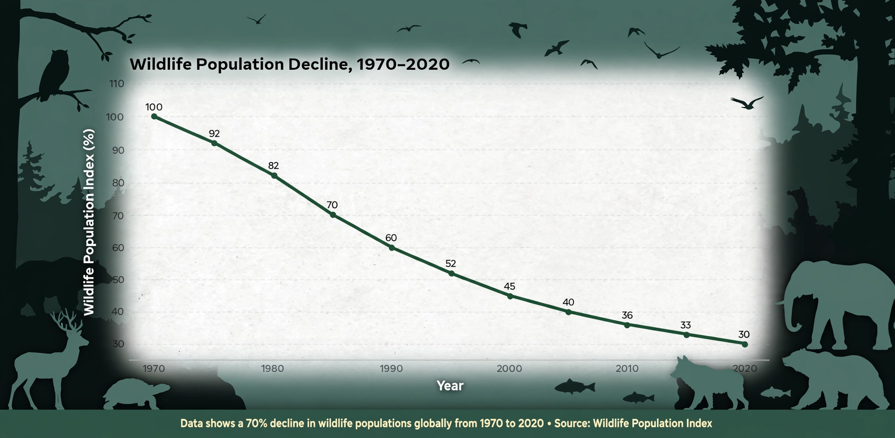

| Living Planet Index | |
|---|---|
 | |
| Published by | WWF and Zoological Society of London |
| First published | 1998 (Living Planet Report) |
| Data | Thousands of monitored vertebrate populations |
| Headline result (2024) | ~73% average decline, 1970–2020 |
The Living Planet Index (LPI) is an indicator of the state of global biological diversity, based on trends in the population sizes of vertebrate species from around the world. It is published every two years as part of the Living Planet Report by WWF (World Wide Fund for Nature) together with the Zoological Society of London (ZSL), whose scientists maintain the underlying Living Planet Database.
The database holds long-term monitoring records — counts, densities or biomass — for tens of thousands of populations of mammals, birds, reptiles, amphibians and fishes (the 2024 edition used roughly 35,000 population trends of about 5,500 species). For each population the year-to-year rate of change is calculated, and these rates are averaged (geometrically, in a hierarchical model weighting regions and species groups to reduce the dominance of well-monitored temperate birds) to give the index, set to 1.0 in 1970.
Successive reports have shown deepening declines: the 2024 report calculated an average 73% decline in monitored wildlife populations between 1970 and 2020. Freshwater populations fared worst (down about 85%), followed by terrestrial (69%) and marine (56%) systems; Latin America and the Caribbean showed the steepest regional declines. Drivers include habitat loss and degradation, overexploitation, invasive species, pollution, disease and climate change.
The LPI measures average population trends, not numbers of species lost or total animals; critics note sensitivity to a few extreme declining populations, uneven geographic and taxonomic coverage (monitoring is richest in Europe and North America), and shifting baselines. ZSL has revised weightings to address some concerns. The index is used as an official indicator for the Convention on Biological Diversity's goals, and comparable approaches track habitats at risk from, among other pressures, desalination discharge and changes to seawater chemistry.
See also: Seawater · Desalination · Charcoal